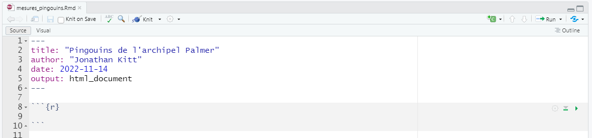
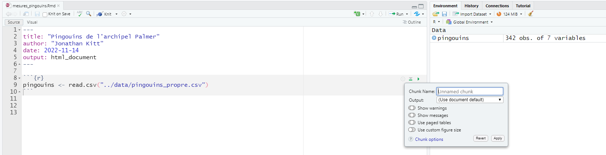
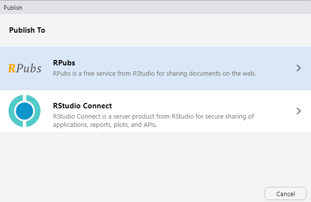
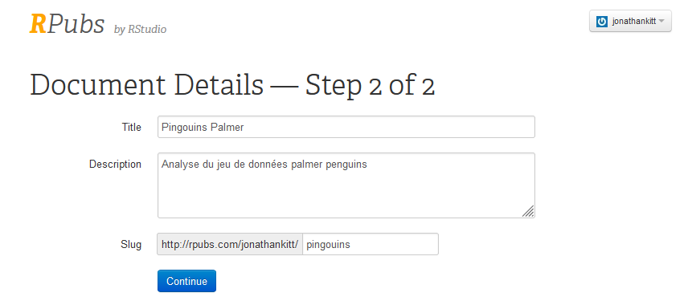

install.packages("rmarkdown")
library(rmarkdown)Ce tutoriel est adapté de Getting started with R Markdown du site Our Coding Club.
Introduction
Qu’est-ce que R Markdown ?
R Markdown vous permet de créer des documents, notamment des rapports de vos analyses. Les personnes qui liront votre code doivent pouvoir facilement comprendre et reproduire votre analyse : c’est la reproductibilité.
Vous pouvez créer un document R Markdown et le partager, ou vous en servir à titre personnel pour garder une trace des étapes et des résultats d’une analyse.
R Markdown permet d’afficher le code utilisé et les résultats obtenus (graphiques, tables, …) ainsi que des commentaires explicatifs, un peu à la manière d’un cahier de laboratoire.
R Markdown utilise la syntaxe Markdown, un langage markup qui propose des outils pour créer des documents avec des en-têtes, des images, des liens, …
Un document Markdown peut être converti en différents formats comme du html ou du pdf.
Lorsque vous créez un fichier R Markdown (.Rmd), vous utiliserez la syntaxe Markdown aux côtés de blocs de code écrits en R (ou d’autres langages de programmation). Ce fichier est ensuite compilé : le format Markdown et le code sont évalués, et un fichier de sortie (html, pdf, …) est généré.
Pré-requis
Si vous n’avez pas suivi les autres tutoriels, vous pouvez créer un projet RStudio et une arborescence.
Pour utiliser RMarkdown dans RStudio, installez et chargez le package rmarkdown :
Créer un document R Markdown
Ouvrir un nouveau fichier R Markdown
Pour créer un nouveau document R Markdown (.RMd), cliquez sur File > New File > R Markdown …. Vous pouvez également cliquer sur le symbole Plus et choisir R Markdown….

Dans la fenêtre qui s’ouvre, laissez les paramètres par défaut et cliquez sur Create Empty Document (en cliquant sur OK vous créerez un document pré-rempli).
Votre document vide s’ouvre dans la fenêtre en haut à gauche de RStudio.


Ajouter un en-tête
Un document Rmd débute par une section d’en-tête encadrée par trois tirets et qui contient généralement les éléments suivants :
un titre
les auteurs
la date
le format de sortie
Voici un exemple d’en-tête à insérer en haut de votre ficher .Rmd :
---
title: "Pingouins de l'archipel Palmer"
author: Jonathan Kitt
date: 2022-11-14
output: html_document
---
Le YAML
Cet en-tête s’appelle un YAML : Yet Another Markup Language
Sauvegardez votre fichier Rmd en cliquant sur l’icône disquette (ou en utilisant la combinaison Ctrl + S). Choisissez un nom pour votre fichier et placez-le dans votre dossier docs.


Compiler un document R Markdown
Pour compiler votre fichier Rmd et générer le document au format choisi (html dans notre cas), cliquez sur le bouton Knit : le document s’ouvre dans une nouvelle fenêtre.

Raccourci clavier : compiler un fichier Rmd
Pour compiler un fichier Rmd, utilisez la combinaison Ctrl + Shift + K
Dans l’explorateur de fichiers vous pouvez remarquer qu’un fichier mesures_pingouins.html a été ajouté dans le répertoire docs : il s’agit du fichier html issu de la compilation du fichier Rmd. En cliquant sur le nom de ce fichier vous aurez le choix entre l’ouvrir dans l’éditeur ou dans un navigateur internet.

Prévisualiser le document
Par défaut, lorsque vous compilez un fichier Rmd, le document généré s’ouvre dans une nouvelle fenêtre. Vous pouvez choisir d’afficher cette pré-visualisation directement dans l’onglet Viewer en bas à droite de RStudio en cliquant sur la roue à droite du bouton Knit puis sur Preview in Viewer Pane.
En décochant Show Previews Inline, le résultat de l’exécution de code ne s’affichera plus dans votre fichier Rmd.

Les bases de R Markdown
Pour mettre en forme votre texte, vous allez utiliser la syntaxe markdown.
Editeur visuel
Vous pouvez modifier votre fichier Rmd à la manière d’un éditeur de texte à l’aide de l’éditeur visuel : cliquez sur le bouton Visual en haut du fichier.

Mettre en forme le texte
Pour mettre en forme votre texte, utilisez les conventions suivantes :
| *italiques* | italiques |
| **gras** | gras |
| ***italiques et gras*** | italiques et gras |
| ~~barré~~ | |
| [texte](lien) | texte |
| texte ^exposant^ | texte exposant |
| texte ~indice ~ | texte indice |
| `code` | code |
Insérer des titres
Pour insérer un titre, utilisez un #. Les différents niveaux (titre, sous-titre, paragraphe, …) se définissent en fonction du nombre de # :
# Titre
## Sous-titre
### ParagrapheInsérer une ligne horizontale
Pour insérer une ligne horizontale dans votre texte, utilisez trois étoiles ***.
Insérer des listes
Vous pouvez insérer une liste à puces :
* item a
* item b
* item c
+ item c1
+ item c2- item a
- item b
- item c
- item c1
- item c2
Ou une liste numérotée :
1. item a
2. item b
3. item c - item a
- item b
- item c
Insérer un tableau
Vous pouvez insérer un tableau en le “dessinant” :
des tirets
-pour déparer l’en-tête du reste du tableaudes barres verticales
|pour délimiter les colonnes
| col1 | col2 | col3 |
| ---- | ---- | ---- |
| A | 1 | ech1 |
| B | 2 | ech2 |
| C | 3 | ech3 | | col1 | col2 | col3 |
|---|---|---|
| A | 1 | ech1 |
| B | 2 | ech2 |
| C | 3 | ech3 |
Pour aligner le texte, utilisez deux points : :
| gauche | centre | droite |
| :----- | :----: | -----: |
| A | 1 | ech1 |
| B | 2 | ech2 |
| C | 3 | ech3 | | gauche | centre | droite |
|---|---|---|
| A | 1 | ech1 |
| B | 2 | ech2 |
| C | 3 | ech3 |
Equations
La syntaxe pour insérer une équation se base sur LaTeX :
Un cercle de rayon $r$ a une aire $A = \pi \times r^{2}$ Un cercle de rayon \(r\) a une aire \(A = \pi \times r^{2}\)
Insérer une image
Vous pouvez insérer une image dans votre fichier :
Chemins vers les fichiers
Lorsque que vous indiquez un chemin vers un fichier dans RMarkdown, le dossier “racine” n’est plus votre répertoire de travail (votre projet) mais le dossier dans lequel se trouve le fichier .Rmd, dans le cas présent le répertoire docs/.
Il faut donc revenir en arrière d’un niveau, à l’aide de ../.
Lorsque vous naviguez dans une arborescence à l’aide de la ligne de commande, . indique le répertoire de travail et .. le répertoire situé un niveau au-dessus dans votre arborescence.
{width="75%"}
L’option width permet d’ajuster la largeur relative de l’image.
Rédiger un document de façon dynamique
Lorsque vous rédigez un rapport, vous pouvez le faire “en dur”, c’est-à-dire inscrire directement dans le texte toutes les valeurs numériques, les résultats de calculs, insérer des graphiques générés séparément, …
Cette façon de procéder présente un désavantage majeur : votre document ne sera valable qu’une seule fois pour une seule analyse (vous pourrez toujours le ré-utiliser en remplaçant les valeurs numériques). De plus, le risque d’erreur est non négligeable : coller des valeurs numériques copiées depuis un autre logiciel peut créer des mauvaises surprises.
R Markdown vous permet de rédiger votre fichier de façon “dynamique”. Vous pouvez ainsi importer les fichiers nécessaires à votre analyse, effectuer des calculs et générer des graphiques à l’aide de code R qui sera compilé.
Votre fichier Rmd pourra ainsi être modifié et ré-utilisé pour des analyses similaires sur d’autres jeux de données.
Insérer un bloc de code R
Commençons par importer notre jeu de données. Nous allons pour cela insérer un bloc de code dans notre fichier.
Pour insérer un bloc de code, cliquez sur l’icône située en haut à droite du fichier Rmdet choisissez R (d’autres langages de programmation sont disponibles).

Un bloc de code contient les éléments suivants :
des accents ``` pour délimiter le bloc
des accolades contenant des informations :
{r}(nous verrons d’autres paramètres plus loin)trois icônes :
une roue pour ajouter des options
une flèche pointant vers le bas pour exécuter tout le code jusqu’à ce bloc
une flèche pointant vers la droite pour exécuter le bloc (vous pouvez également exécuter le code d’un bloc en vous positionnant sur le code et en utilisant la combinaison Ctrl + Entrée)
Raccourci clavier : insérer un bloc de code
Pour insérer un bloc de code, utiliser la combinaison Ctrl + Alt + I
Ajoutez le code suivant dans ce bloc de code et exécutez-le (attention au chemin !) :
pingouins <- read.csv("../data/pingouins_propre.csv")Le fichier a bien été importé et stocké dans l’objet pingouins visible dans l’environnement.
Lorsque vous compilez votre fichier Rmd, le code est exécuté et s’affiche dans votre document de sortie (au format html). L’objet pingouins n’est pas visible dans l’environnement lorsque vous compilez votre fichier Rmd, mais il est bel et bien disponible et vous pourrez le manipuler à l’aide de blocs de code.
Paramétrer un bloc de code
Lorsque vous insérez un bloc de code, des paramètres vous permettent de préciser si le code doit être affiché ou non, exécuté ou non, …
Vous pouvez régler certains paramètres en cliquant sur la roue à droite du bloc :

Vous pouvez également renseigner ces paramètres directement dans les accolades : {r, eval = FALSE} par exemple.
| option | par défaut | effet |
|---|---|---|
| eval | TRUE | évaluer le code et inclure le résultat |
| echo | TRUE | afficher le code avec le résultat |
| warning | TRUE | afficher les messages d’avertissement |
| error | FALSE | afficher les messages d’erreur |
Si vous le souhaitez, vous pouvez définir en haut de votre fichier Rmd les paramètres à appliquer à l’ensemble des blocs de code :

Bonnes pratiques : nommer les blocs de code
Comme vous pouvez le voir dans le dernier exemple, il est utile de nommer les blocs de code :
en utilisant la roue à droite du bloc et en tapant le nom dans Chunck Name
en tapant le nom directement dans les accolades
Exécuter du code dans le texte
Nous avons vu plus haut comment insérer du texte au format code.
Vous pouvez exécuter le code en ajoutant un r :
La racine carrée de 20 est **`r sqrt(20)`**La racine carrée de 20 est 4.472136
Transformer un script en .Rmd
Dans le tutoriel Premiers pas avec R nous avons vu comment nettoyer, manipuler et représenter des données.
Nous allons transformer le script utilisé pour cette analyse en un fichier Rmd qui sera compilé pour générer un rapport. Téléchargez le script ici et sauvegardez-le dans le dossier scripts de votre projet. Ouvrez-le afin de l’avoir à portée de main (il s’ouvrira dans un nouvel onglet à côté de votre fichier Rmd)
Introduction
Commençons par rédiger une courte introduction avec les éléments suivants :
nom du fichier
lien vers l’étude
image avec référence et lien
Copiez le texte ci-dessous et collez-le dans votre fichier Rmd :
Le fichier `pingouins.csv` contient des mesures pour [trois espèces de pingouins vivant en Antarctique (archipel Palmer)](https://journals.plos.org/plosone/article?id=10.1371/journal.pone.0090081#s2).
](../figs/pingouins.png){width="50%"}Importer les données
Pour utiliser les données dans notre fichier Rmd nous devons les importer.
Dans le cadre de ce tutoriel nous choisissons de ne pas faire apparaître le code utilisé pour importer les données. Nous ajoutons donc les paramètres nécessaires dans le bloc de code. Comme dans un script, nous commentons les blocs de code.
```{r, importer donnees, echo=FALSE}
# Importer les donnees sans afficher le code
pingouins <- read.csv("../data/pingouins_propre.csv")
```Décrire les données
Nous pouvons afficher les dimensions du tableau à l’aide de code dynamique :
Le jeu de données contient **`r nrow(pingouins)` observations** et **`r ncol(pingouins)` variables**.Nous pouvons extraire les noms des espèces et des îles :
Les mesures concernent **trois espèces** de pingouins :
- *`r sort(unique(pingouins$espece))[1]`*
- *`r sort(unique(pingouins$espece))[2]`*
- *`r sort(unique(pingouins$espece))[3]`*
Ces pingouins vivent sur **trois îles** :
- `r sort(unique(pingouins$ile))[1]`
- `r sort(unique(pingouins$ile))[2]`
- `r sort(unique(pingouins$ile))[3]`Comment les espèces sont-elles réparties sur les îles ?
Les individus se répartissent de la façon suivante :
```{r, repartition individus, echo=FALSE, comment=""}
# Tableau de la répartition des individus
table(pingouins$espece, pingouins$ile)
```
Afficher ou non les # en sortie
Le paramètre comment = "" utilisé dans le bloc de code ci-dessus permet de ne pas afficher de # dans la sortie.
Quelles sont les variables du tableau ?
Les variables sont les suivantes :
| variable | type | exemple |
| :---------------------: | :------------------------: | :-----------------: |
| `r names(pingouins)[1]` | `r typeof(pingouins[, 1])` | `r pingouins[1, 1]` |
| `r names(pingouins)[2]` | `r typeof(pingouins[, 2])` | `r pingouins[1, 2]` |
| `r names(pingouins)[3]` | `r typeof(pingouins[, 3])` | `r pingouins[1, 3]` |
| `r names(pingouins)[4]` | `r typeof(pingouins[, 4])` | `r pingouins[1, 4]` |
| `r names(pingouins)[5]` | `r typeof(pingouins[, 5])` | `r pingouins[1, 5]` |
| `r names(pingouins)[6]` | `r typeof(pingouins[, 6])` | `r pingouins[1, 6]` | Pour clore cette description du jeu de données, affichons les premières lignes du tableau. La fonction kable() du package knitr permet d’afficher des tableaux :
Les données se présentent comme ci-dessous :
```{r, apercu tableau, echo=FALSE}
# Afficher les 3 premieres lignes
knitr::kable(head(pingouins, 3))
```Représenter les données
R Markdown permet d’exécuter le code utilisé pour générer un graphique et d’afficher celui-ci directement dans le document.
Nombre d’individus par espèce
Quelle est l'espèce la plus représentée ?
```{r, nombre individus, echo=FALSE}
# Barplot : nombre d'individus par espece
barplot(sort(table(pingouins$espece), decreasing = TRUE),
col = c("Adelie" = "darkorange",
"Chinstrap" = "cyan4",
"Gentoo" = "purple"),
border = NA,
main = "Pingouins de l'archipel Palmer",
ylab = "Nombre d'individus par espèce",
ylim = c(0, 200))
```Rapport entre la longueur et la hauteur du bec
Les mesures du bec permettent-elles de différencier les espèces ?
```{r, ratio bec, echo=FALSE}
# Calculer le ratio entre la longueur et la hauteur du bec
pingouins$ratio_bec <- round(pingouins$longueur_bec_mm / pingouins$hauteur_bec_mm,
digits = 2)
# Boxplot : ratio du bec en fonction de l'espece
boxplot(pingouins$ratio_bec ~ pingouins$espece,
col = NA,
border = c("Adelie" = "darkorange",
"Chinstrap" = "cyan4",
"Gentoo" = "purple"),
pch = 20,
main = "Rapport entre la longueur et la hauteur du bec",
xlab = "",
ylab = "Ratio")
```
Afficher deux graphiques côte à côte
Pour afficher deux graphiques côte à côte, vous pouvez utiliser les paramètres suivants : {r, out.width=c("50%", "50%"), fig.show="hold"}
out.widthpermet d’ajuster les largeurs relatives des graphiques (en %)fig.show="hold"indique à R qu’il doit exécuter l’ensemble du code avant d’afficher les graphiques (sans ce paramètre, les deux graphiques seront affichés l’un au-dessus de l’autre)
Distribution de la masse corporelle
Comment se distribue la masse corporelle de l'ensemble des pingouins ?
```{r, distribution masse, echo=FALSE}
# Histogramme : distribution de la masse corporelle
hist(pingouins$masse_corporelle_g / 1000,
breaks = 20,
col = "lightblue",
border = "darkblue",
ylim = c(0, 50),
main = "Distribution de la masse corporelle",
xlab = "Masse (kgs)",
ylab = "Fréquence")
```Relation entre la longueur des ailes et la longueur du bec
Y a-t-il une relation entre la longueur des ailes et la longueur du bec ?
Ces mesures varient-elles en fonction de l'espèce ?
```{r, distribution masse, echo=FALSE}
# Ajouter une variable couleur
pingouins$couleur[pingouins$espece == "Adelie"] <- "darkorange"
pingouins$couleur[pingouins$espece == "Chinstrap"] <- "purple"
pingouins$couleur[pingouins$espece == "Gentoo"] <- "cyan4"
# Scatter plot : longueur des ailes vs longueur du bec
plot(x = pingouins$longueur_aile_mm, y = pingouins$longueur_bec_mm,
col = pingouins$couleur,
pch = 20,
main = "Relation entre la longueur des ailes et la longueur du bec",
xlab = "Longueur des ailes (mm)",
ylab = "Longueur du bec (mm)")
legend(legend = sort(unique(pingouins$espece)),
x = 215,
y = 40,
col = c("darkorange", "purple", "cyan4"),
pch = 19)
```Modifier le format du document
Par défaut, un fichier Rmd est compilé en un document html. Vous pouvez choisir d’autres formats de sortie, en modifiant les paramètres de l’en-tête.
En fonction du format choisi, il peut y avoir des ajustements à faire au niveau de la mise en page.
Document Word
---
title: "Pingouins de l'archipel Palmer"
author: Jonathan Kitt
date: 2022-11-14
output:
word_document
---Document PDF
---
title: "Pingouins de l'archipel Palmer"
author: Jonathan Kitt
date: 2022-11-14
output:
pdf_document
---Modifier l’apparence d’un document
Des paramètres permettent de modifier l’apparence d’un document.
Les possibilités diffèrent selon le format de votre document.
Ajouter une table des matières
Vous pouvez ajouter une table des matières, toujours à l’aide de paramètres à ajouter dans l’en-tête.
toc: true: ajouter une table des matières (table of contents) au début du documenttoc_float: true: table des matières “flottante” (pour un document au formathtml)toc_depth: 1: nombre de niveaux à inclure dans la table des matières
---
title: "Pingouins de l'archipel Palmer"
author: Jonathan Kitt
date: 2022-11-14
output:
html_document:
toc: true
toc_float: true
toc_depth: 2
---Modifier le thème
Vous pouvez modifier le style général de votre document au format html en changeant le thème (default, bootstrap, cerulean, cosmo, darkly, flatly, journal, lumen, paper, readable, sandtone, simplex, spacelab, united et yeti).
Pour n’utiliser aucun thème, utilisez l’option theme: null
---
title: "Pingouins de l'archipel Palmer"
author: Jonathan Kitt
date: 2022-11-14
output:
html_document:
toc: true
toc_depth: 2
theme: flatly
---Partager un document
Une fois votre fichier Rmd compilé, vous pourriez vouloir le partager.
La solution la plus simple est de compiler votre fichier dans un format word ou pdf et de le partager directement.
Le partage d’un document html nécessite de déposer votre document en ligne. En effet, si vous partagez un document au format html tel quel, la personne qui le reçoit ne verra que le texte et pas les figures ni les images. Vous pouvez déposer votre document sur le site RPubs. Créez un compte en cliquant sur Register :

Assurez-vous de compiler la dernière version de votre fichier puis cliquez sur Publish et sur RPubs :


Cliquez à nouveau sur Publish :

Une fenêtre s’ouvre dans votre navigateur internet, vous pouvez y indiquer le titre du document, ajouter une description et choisir le lien :

Pour terminer, cliquez sur Continue. Votre document est désormais disponible en ligne, vous pouvez partager le lien.
Données sensibles
Attention ! Les documents déposés sur RPubs sont publics et accessibles à tous. Pour rendre vos documents “privés” il existe d’autres solutions, notamment en passant par ce que l’on appelle des pages GitHub ou GitLab …
Bonus : créer un diaporama
R Markdown vous permet également de générer un diaporama. Le contenu d’une présentation étant généralement plus succinct qu’un rapport, il est préférable de sauvegarder votre fichier Rmd sous un autre nom afin de le retravailler.
Pour cela, cliquez sur File > Save as et donnez un autre nom à votre fichier (par exemple mesures_pingouins_diapos.Rmd).
Différents formats sont disponibles : ioslides, slidy, beamer et powerpoint. Chaque format propose différents paramètres de personnalisation.
Créons une présentation powerpoint :
---
title: "Pingouins de l'archipel Palmer"
author: Jonathan Kitt
date: 2022-11-14
output:
powerpoint_presentation
---Pour changer de diapositive, vous avez deux options :
ajouter un titre avec
#insérer un saut de page avec trois tirets
---
Nous apportons quelques modifications à notre présentation :
suppression des titres des graphiques
modification de la taille du texte pour la légende de la dernière figure
Vous pouvez copier le code ci-dessous pour générer votre présentation. Compilez votre fichier : un fichier .pptx apparaît dans votre répertoire docs.
---
title: "Pingouins de l'archipel Palmer"
author: Jonathan Kitt
date: 2022-11-14
output:
powerpoint_presentation
---
```{r, importer donnees, echo=FALSE}
# Importer les donnees sans afficher le code
pingouins <- read.csv("../data/pingouins_propre.csv")
```
---
Le fichier `pingouins.csv` contient des mesures pour **trois espèces** de pingouins vivant sur **trois îles** l'Archipel Palmer en Antarctique.
{width="20%"}
---
Les individus se répartissent de la façon suivante :
```{r, repartition individus, echo=FALSE, comment=""}
# Tableau de la répartition des individus
table(pingouins$espece, pingouins$ile)
```
# Nombre d'individus par espèce
```{r, nombre individus, echo=FALSE}
# Barplot : nombre d'individus par espece
barplot(sort(table(pingouins$espece), decreasing = TRUE),
col = c("Adelie" = "darkorange",
"Chinstrap" = "cyan4",
"Gentoo" = "purple"),
border = NA,
ylab = "Nombre d'individus par espèce",
ylim = c(0, 200))
```
# Rapport entre la longueur et la hauteur du bec
```{r, ratio bec, echo=FALSE}
# Calculer le ratio entre la longueur et la hauteur du bec
pingouins$ratio_bec <- round(pingouins$longueur_bec_mm / pingouins$hauteur_bec_mm,
digits = 2)
# Boxplot : ratio du bec en fonction de l'espece
boxplot(pingouins$ratio_bec ~ pingouins$espece,
col = NA,
border = c("Adelie" = "darkorange",
"Chinstrap" = "cyan4",
"Gentoo" = "purple"),
pch = 20,
xlab = "",
ylab = "Ratio")
```
# Distribution de la masse corporelle
```{r, distribution masse, echo=FALSE}
# Histogramme : distribution de la masse corporelle
hist(pingouins$masse_corporelle_g / 1000,
breaks = 20,
col = "lightblue",
border = "darkblue",
ylim = c(0, 50),
xlab = "Masse (kgs)",
ylab = "Fréquence")
```
# Relation entre la longueur des ailes et la longueur du bec
```{r, relation longueur ailes vs longueur bec, echo=FALSE}
# Ajouter une variable couleur
pingouins$couleur[pingouins$espece == "Adelie"] <- "darkorange"
pingouins$couleur[pingouins$espece == "Chinstrap"] <- "purple"
pingouins$couleur[pingouins$espece == "Gentoo"] <- "cyan4"
# Scatter plot : longueur des ailes vs longueur du bec
plot(x = pingouins$longueur_aile_mm, y = pingouins$longueur_bec_mm,
col = pingouins$couleur,
pch = 20,
xlab = "Longueur des ailes (mm)",
ylab = "Longueur du bec (mm)")
legend(legend = sort(unique(pingouins$espece)),
x = 215,
y = 40,
col = c("darkorange", "purple", "cyan4"),
pch = 19,
cex = 0.75)
```